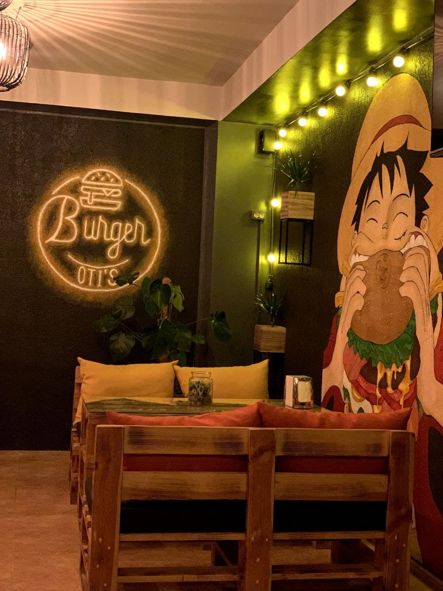
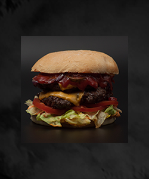
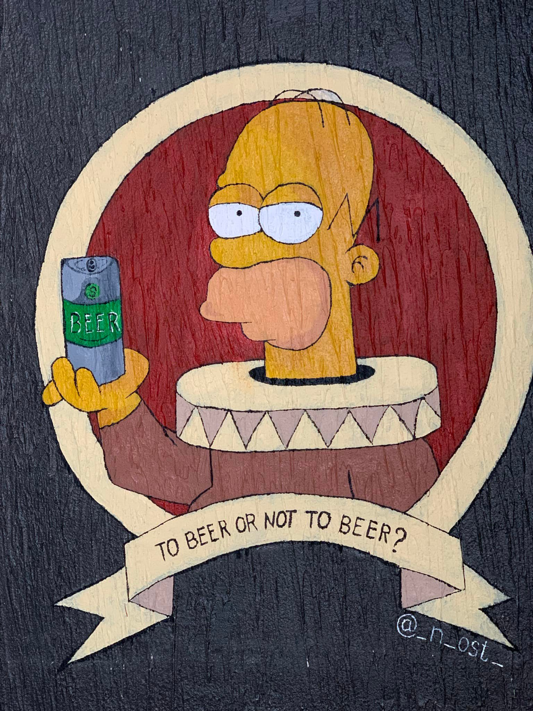
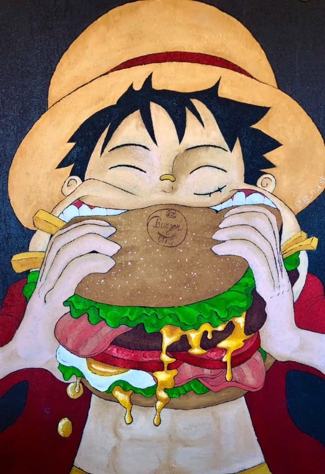

About Us
-
Oti's Burger!
Restautantul Oti's a fost doar un vis, care apoi a prins contur. Deschis în orașul Ungheni, este ca o bijuterie ce vă stă la dispoziție pentru a vă satisface poftele purtate. Fie că doriți o masă copioasă sau să petreceți timpul cu persoanele dragi, localul Oti's este destinația pe care o căutați. Un local micuț, ce vă face fericiți !
 -
Bucatele noatre!
Varietatea bucatelor găsite în meniu sunt pregătite după o rețetă specială, inspirată din străinătate, cu ingrediente proaspete și oameni calificați în domeniu. Mediul de preparare se află mereu curat, la fel și locul în care mâcarea se deservește. Mărimea porției, prețul și timpul în care o primești se completează armonios. Comandă acum!
 -
Bazele!
Întreaga muncă pe care o depunem are la bază valorile restaurantului noastru: sârguință, respect, evoluție, transparență și pasiune. Zi de zi, ne perfectăm în fiecare aspect posibil, cu scopul de a ne construi un renume puternic. Dorim necontenit să ridicăm zâmbete pe față, când zilele devin posomorâte și să creăm persistent amintiri dragi sufletului.
 -
Comandă acasă!
Acum poți savura nu doar gustul mâncării și al atmosferei din restaurant, dar și confortul proprieii tale locuințe. Deci, adună-ți familia și prietenii dragi, pune un film interesant să deruleze la televizor și nu ezita să comanzi ceva delicios din meniul nostru. Toate îți stau la dispoziție!
-
Echipa Noatră!
Angajații ce vă stau la dispoziție în acest local sunt cu mult mai mult decât o echipă. Au devenit ușor o familie iubitoare, ce depun stăruință și suflet în ceea ce fac. Bucătarii iscusiți și chelnerii calificați vă vor asigura cu cea mai mare atenție o ședere plăcută.
